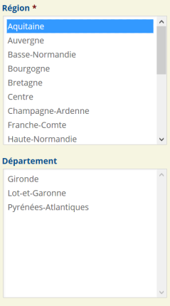

Introduction - cas utilisateurs
Un changement de contexte est un changement dans la page risquant d'être ignoré ou incompris par un utilisateur qui ne peut pas voir la page dans sa globalité. C'est le cas notamment des aveugles qui utilisent un lecteur d'écran et des malvoyants qui naviguent avec une loupe d'écran.
Exemple : la mise à jour de champs de formulaire dynamique ou un changement de contenu dynamique de la page.
Afin de leur permettre de comprendre ces changements, il faut qu'ils en soient préalablement prévenus ou que ces changements résultent d'une action explicite de leur part.
Parallèlement, des handicapés mentaux ou certains utilisateurs ayant des troubles de l'attention peuvent avoir des problèmes à interpréter correctement les fenêtres d'alerte quand ils ne les ont pas sollicitées. Dans ce cas, il faut leur offrir le moyen de les contrôler, notamment en les désactivant.
Changement de contexte
Les changements de contexte sont nombreux sur une page ou une application web. On considère qu'il y a un changement de contexte dans les cas suivants :
- changement d'agent utilisateur, par exemple sur un lien de téléchargement ;
- changement d'espace de restitution, par exemple l'affichage d'une nouvelle page ;
- changement de focus, par exemple le fait de transférer le focus d'un endroit à un autre ;
- changement de contenu qui modifie le sens de la page ou d'un élément, par exemple une mise à jour dynamique de contenu.
Ces quatre cas génériques recouvrent des situations, généralement prises en charge par des critères spécifiques dans le référentiel RGAA : comme l’obligation d’indiquer le type de fichier dans un lien de téléchargement, l’obligation de rendre les liens explicites ou encore l’obligation de préserver un ordre de tabulation cohérent.
Toutefois, il peut y avoir des cas qui échappent aux critères spécifiques du RGAA.
Dans ce cas, en présence d'un changement de contexte avéré, il faut s'assurer que l'utilisateur est prévenu du changement de contexte par l'un des moyens suivants :
- un texte explicatif avant le changement de contexte ;
- l'utilisation d'un bouton pertinent pour initier le changement de contexte ;
- l'utilisation d'un lien pertinent pour initier le changement de contexte.
Exemple : mise à jour dynamique de champs de formulaire
 Imaginons un formulaire qui contiendrait deux champs : un champ pour la région et un champ désactivé pour le département. Lorsqu'une région est sélectionnée, le champ Département est activé et mis à jour avec la liste des départements concernés.
Il y a potentiellement une situation de changement de contexte.
Deux moyens sont possibles pour adapter ce comportement :
- interfacer un bouton entre les deux champs de telle sorte que ce soit l'utilisateur qui provoque l'activation et la mise à jour du champ région ;
- utiliser un
fieldset et une légende pertinente comme « choisir la région puis le département ».
Dans les deux cas l'utilisateur sera bien prévenu de ce qu'il va se passer et en mesure d'utiliser le mécanisme de manière satisfaisante.
Exemple : liste de navigation
Imaginons une liste select affichant une liste des pages d'un document. Lorsque l'utilisateur sélectionne un item de la liste, la page est mise à jour.
Cette situation de changement de contexte très commune est problématique. Si l'utilisateur ne voit pas le changement opéré, il peut simplement l'ignorer et croire qu'il ne s'est rien passé alors que la page a été changée.
Le seul moyen d'adapter ce dispositif est de s'en tenir au comportement normal d'une liste select de formulaire : sélectionner un item dans la liste et activer un bouton.
Attention : Cette remarque ne concerne que les listes select. Si vous utilisez un composant permettant d'afficher/masquer une liste constituée de liens par exemple, alors il n'y aura rien à faire. L'utilisateur comprendra que la page va être mise à jour s'il active un des liens.
Alerte non sollicitée (AAA)
Il est habituel de vouloir alerter l'utilisateur lors d'actions importantes ou tout au long d'un processus. Lorsque ces informations sont faites sous forme d'alertes, elles peuvent être perturbantes, désorienter l'utilisateur ou rendre ses saisies très laborieuses.
Il faut donc toujours donner la possibilité à l'utilisateur de désactiver et de réactiver ces alertes.
Font exception les cas d'urgence, d'un événement ou d'une situation soudaine et imprévue qui exige une action immédiate afin de préserver la santé, la sécurité ou la propriété. Dans ces cas il n'est pas requis que les alertes soient contrôlables par l'utilisateur.